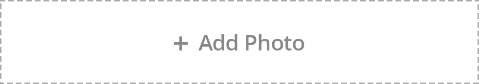

<ion-view hide-nav-bar="true" ng-init="adc2.init()">

   <div class="bar bar-header bar-positive" id="map_header">
        <button class="button" ng-click="pdc1.getPrevCache()">Cancel</button>
        <h1 class="title-text"><span ng-click="goHome()">Applying Job</span></h1>
         <button class="button" ng-click="resetCache()">Reset</button>
    </div>

  <ion-content class="jobsearch-has-subheader normal-header">
	<div class="content-box">
    		<div class="postjobStep">
			<div class="divTable" style="border: none;">
				<div class="divRow">
					<div class="divCell">
						<div>
							<div class="stepImg">
								
								<div class="stepOne"><font color="#ffffff" style="" >1</font></div>
							</div>
						</div>
					</div>
					<div class="divCell">
						<div>
							<div class="stepImg">
								
								<div class="stepOne"><font color="#ccc" style="" >2</font></div>
							</div>
						</div>
					</div>

				</div>
			</div>
		</div>

            <h5 class="sub-title sub">Upload File</h5>

        
        <div class="input-box">
                <div class="item input-type1">  </div>
            </div>        
        
    
      <div class="buttons">
      <button class="icon-right ion-camera" ng-click="adc2.selectFromCamera()"></button>
      <button class="icon-right ion-cloud" ng-click="adc2.selectFromCloud()"></button>
      </div>

    </div>
    <div ng-if="ispdf1">
      <ng-pdf ng-if="pdfUrl1" template-url="views/app/pdfviewer3.html" canvasid="pdf"  scale="page-fit"></ng-pdf>
    </div>
    <div ng-if="isimg1">
      <ion-scroll max-zoom="5" overflow-scroll="false" style="width: 100%; height: 100%" zooming="true" direction="xy" class="has-header">
        
      </ion-scroll>
    </div>
    <div ng-if="istxt1">
        <label class="item item-input">
          <textarea ng-model="applying.content" rows="15" select-on-click style="border-style: inset;border-width: 1px; margin-left: -7px;" disabled="true"></textarea>
        </label>

    </div>

    <!--<div class="card" ng-if="posting.stepthree.filetype=='3004'" >
      <div class="item item-text-wrap">
       {{posting.stepthree.content}}
      </div>
    </div>-->

	</div>
  </ion-content>

    <ion-footer-bar class="footer-bar-custom">
        <div class="stepbtn stepbtn-active" style="width: 100%"><a style="" ng-click="padc2.submitApplication()">Submit</a></div>
    </ion-footer-bar>

</ion-view>
